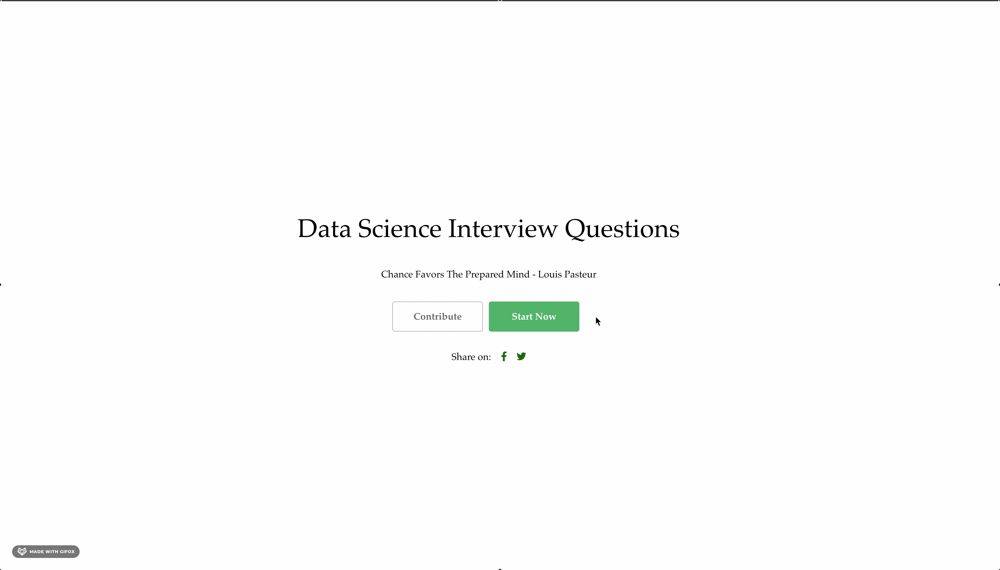
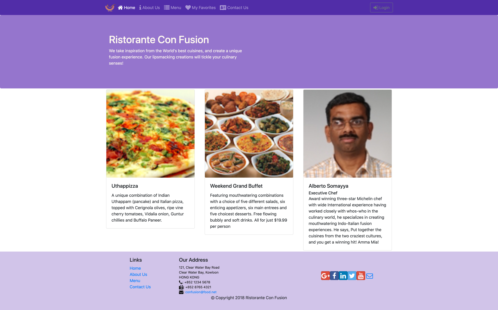
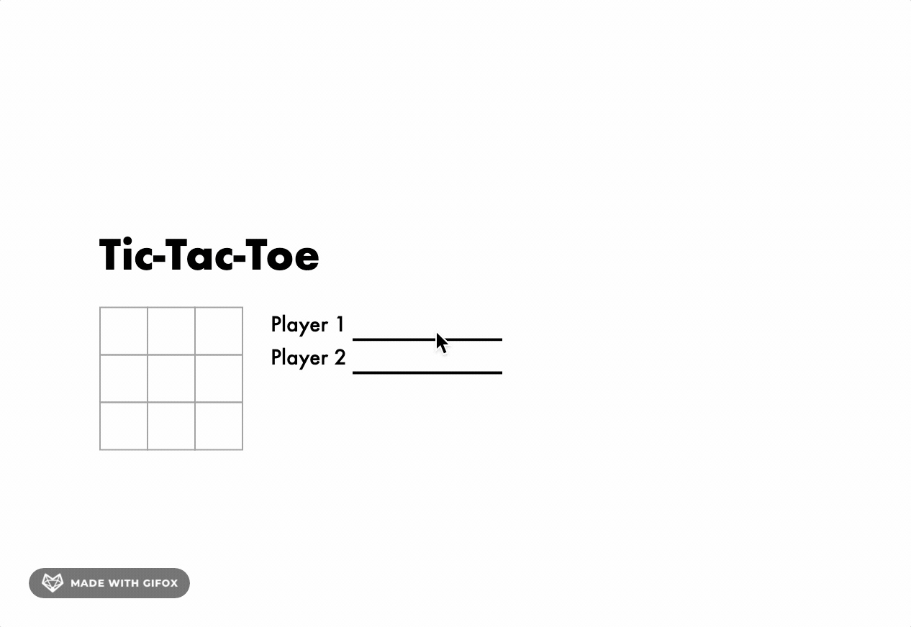
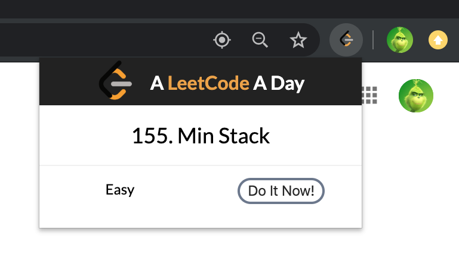

Web Development
Front End
A website that helps practice Data Science interview questions
React
Firebase
Firebase-Realtime-Database
Firebase-Hosting

This project aims to explore trend of big tech companies' M&A for the last two decades, and try to provide insights for both the startups and the investors.
D3.js
HTML/CSS
A restaurant website designed with Bootstrap
Bootstrap4
HTML/CSS/JavaScript
Utilized Reactstrap to enable responsive design and React Router to render various views.
Used Redux with Thunk middleware to realize the Flux architecture that allows asynchronous calls across components.
Developed client-server communication using json-server and Fetch.
React
Node.js

Recreated The New York Times Coronavirus Map with React and d3 framework.
React
D3.js
Developed a Tic Tac Toe game with React framework and deployed on my Github page.
React
HTML/CSS

Developed a Chrome Extension to randomly pop up a Top 100 LeetCode questions on the tab.
JavaScript
HTML/CSS

Back End
Developed a full-fledged REST API server with Express, MongoDB and Mongoose
Served up various REST API end points together with interaction with the MongoDB server using Mongoose methods
Used JSON web tokens for token-based user authentication to enable authenticated access to server resources
Used Passport module together with passport-local and passport-local-mongoose for setting up local authentication within the server
Generated the private key and public certificate and configured the HTTPS server
Configured the application to support Cross-Origin Resource Sharing
Node.js
Express
Mongoose
passport
JSON-Web-Token
MOOC
Web protocols: HTTP and HTTPS
NodeJS and Express for building web servers
CRUD operations, NoSQL databases, in particular MongoDB and Mongoose for accessing MongoDB from NodeJS
Building a RESTful API and touching upon authentication and security
Backend as a service (BaaS)
This course will give you an overview of client-side web UI frameworks, in particular Bootstrap 4. You will learn about grids and responsive design, Bootstrap CSS and JavaScript components. You will learn about CSS preprocessors, Less and Sass. You will also learn the basics of Node.js and NPM and task runners like Grunt and Gulp.